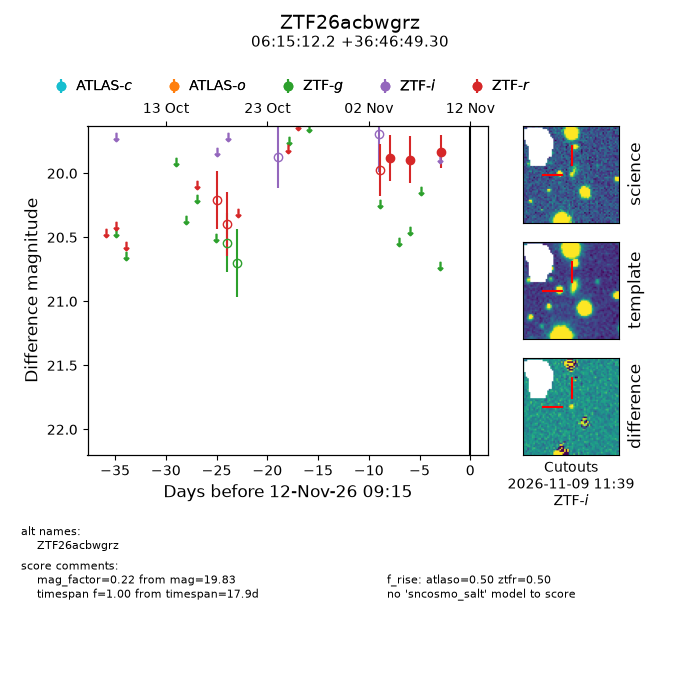
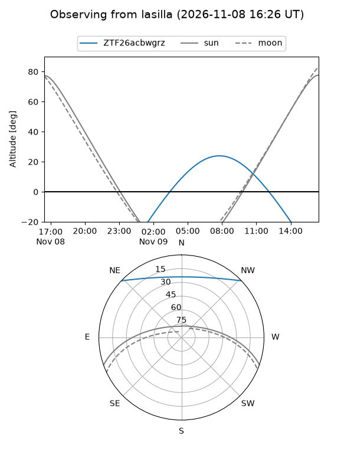
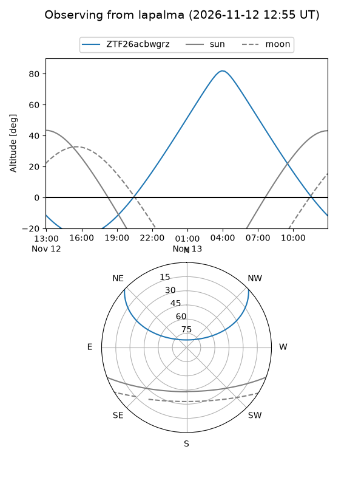
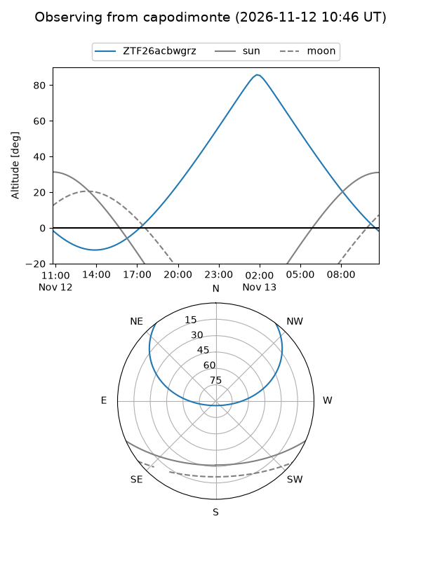
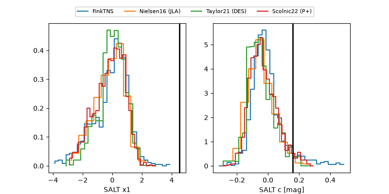

ZTF26acbwgrz
Target ZTF26acbwgrz at 2026-11-12 09:20
Aliases and brokers:
FINK-ZTF: ztf.fink-portal.org/ZTF26acbwgrz
Lasair-ZTF: lasair-ztf.lsst.ac.uk/objects/ZTF26acbwgrz
ALeRCE-ZTF: alerce.online/object/ZTF26acbwgrz
Direct TNS query: direct search
alt names
ZTF26acbwgrz (ztf,fink_ztf)
Coordinates:
equatorial (ra, dec) = 93.8006,+36.78036
equatorial (HMS+DMS) = 06:15:12.15,+36:46:49.30
galactic (l, b) = (176.1934,+9.25256)
Flags:
peak dt:
Photometry:
last atlaso=nan, ztfr=19.83
1 atlaso, 3 ztfr detections
Lightcurve

Visibility



Additional plots
